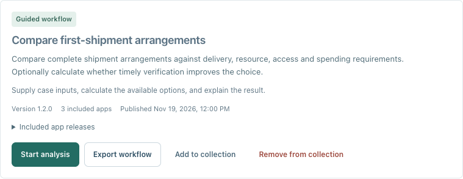
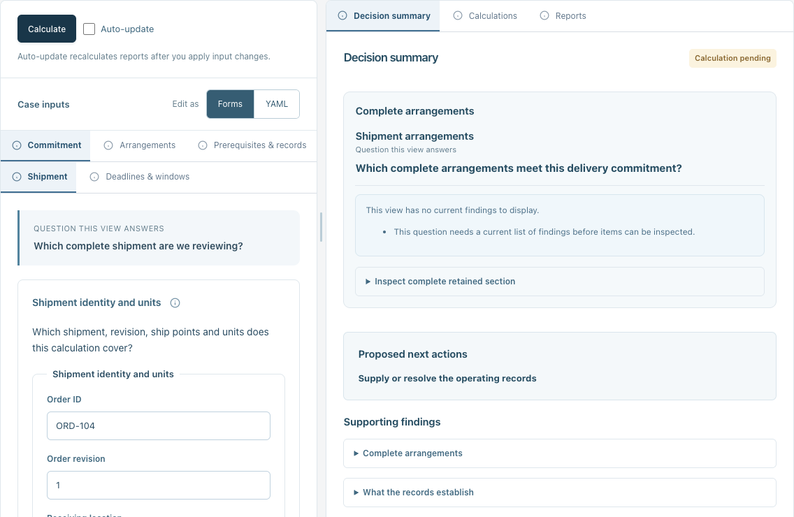
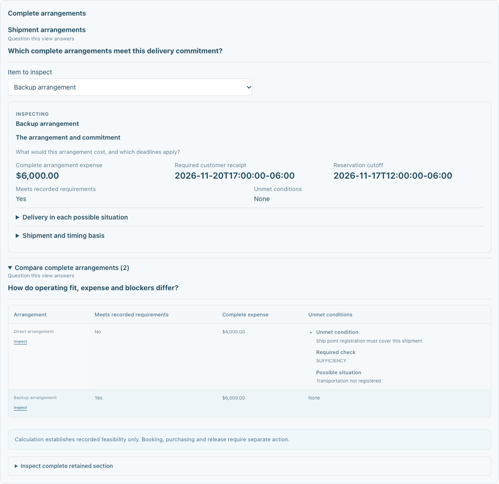
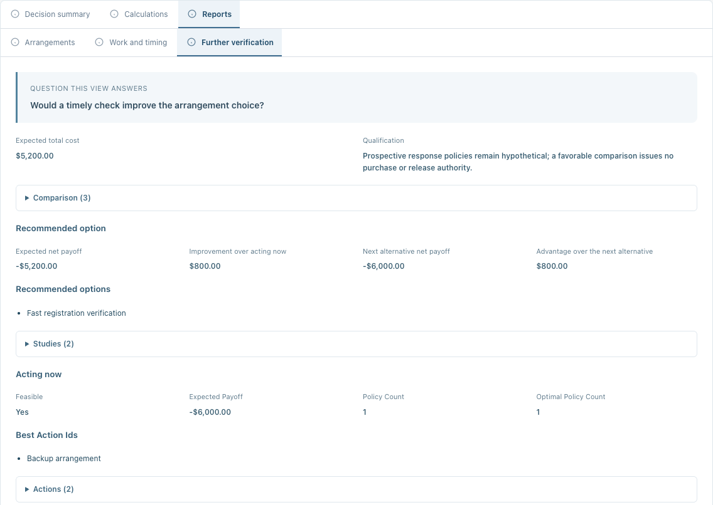
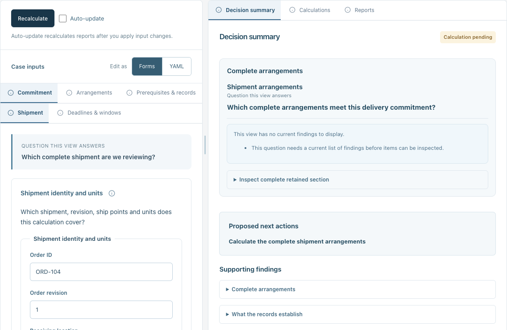
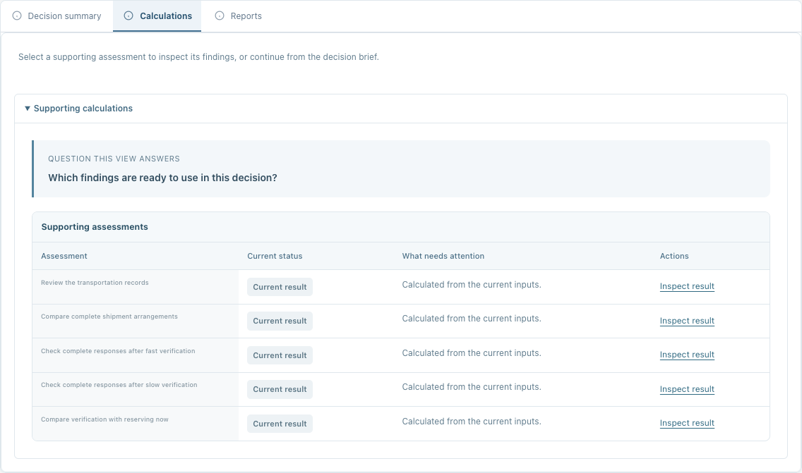
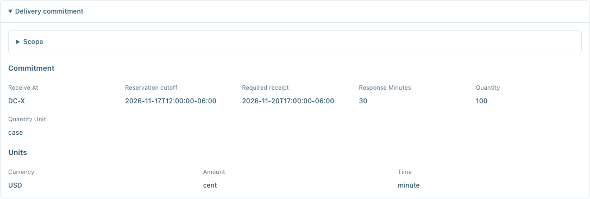
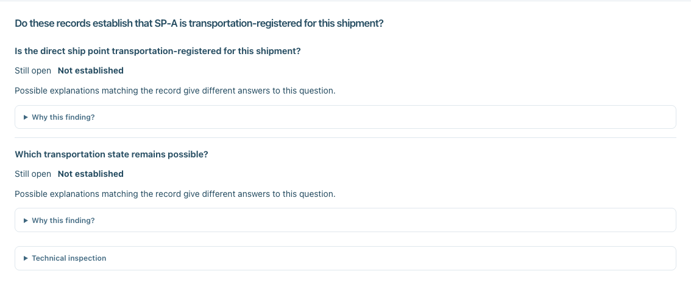
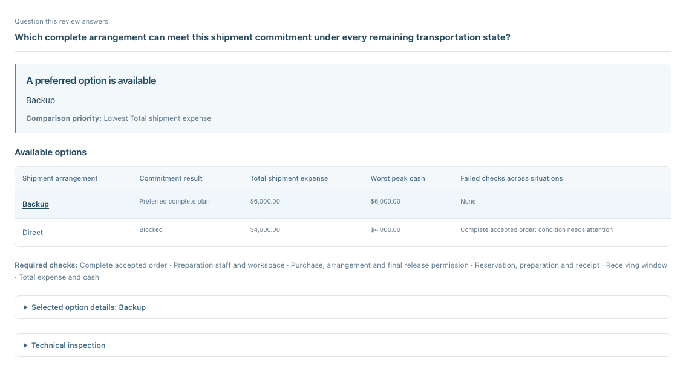
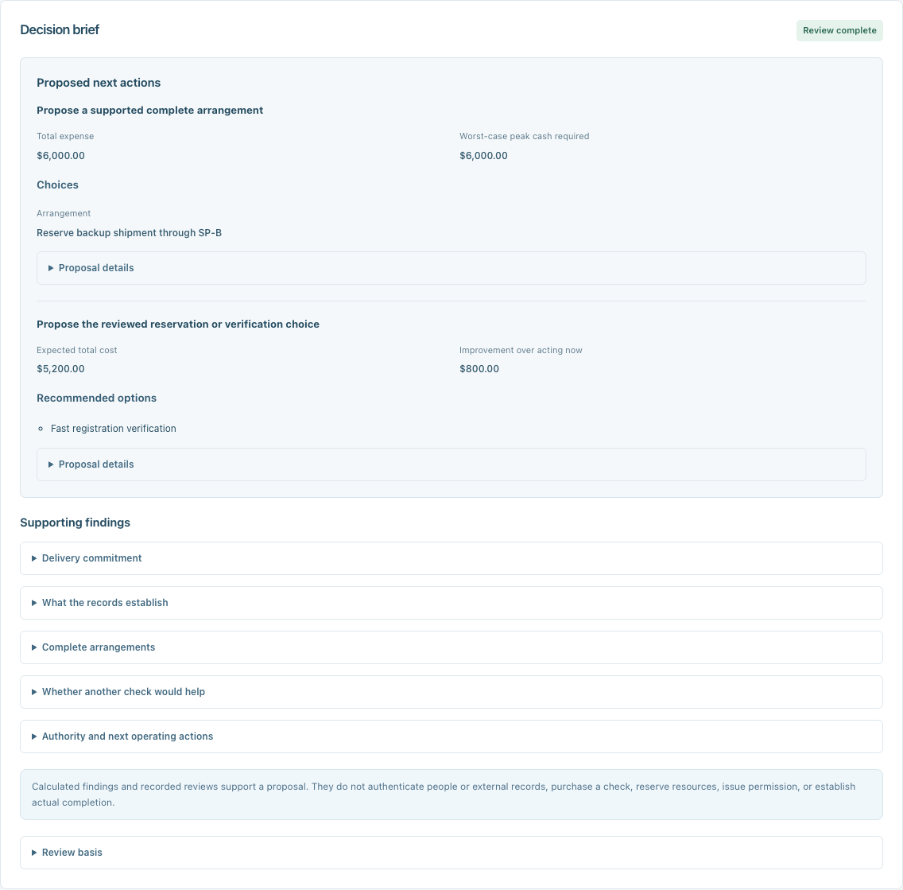

Requirements reference: Walmart’s checklist, p. 11 (collect suppliers). Business context: 8th & Walton (Terry Clear, June 4, 2025). This walkthrough uses a source-informed fictional example. Sources and demonstration scope.
The shipment lead has a noon reservation cutoff, a cheaper route with uncertain transportation registration and a customer promise to protect. Supply the available records, calculate which complete arrangements meet the requirements and inspect whether a timely check would improve the choice.
The workflow brings together reusable solutions to recurring problems: interpret evidence while keeping uncertainty visible, compare complete shipment plans with their recorded arrangements, and assess whether verification would help before commitment. The app author has connected these approaches for this review. You supply this shipment’s facts and review the resulting findings. See Pattern Languages for Human Decisions for the broader idea.
A shipment plan describes the intended route, dates and cost. An arrangement connects the work, people, resources, permissions and dependencies needed to carry it out over time. The arrangement changes as the situation develops; this app evaluates the version you have recorded. Update inputs and recalculate affected findings when conditions or evidence change. See The Arrangement Problem in Human Decisions for the broader concept.
The calculation walkthrough uses Compare first-shipment arrangements 1.2.0. A separate archived exercise below retains the exact reviewed 1.0.1 release exported in the app-author reference guide. Keep the business process chart available as a reference.
The connected assessments answer different questions: what the registration records support, which complete shipment responses satisfy the requirements, and whether timely verification improves the modeled outcome. Their findings retain the supplied scope and the hypothetical numerical assumptions below.
Supply the inputs. Calculate the decision support.
Open Decision Lab, update the Order fulfillment collection in Marketplace, and open Compare first-shipment arrangements 1.2.0. Choose Start analysis for a fresh case. Updating an installed collection does not change a saved review’s embedded rules or execution policy.


The case starts with fictional supplied inputs. There is no reviewer-name field, answer-state selector or acceptance step in this calculation flow. Replace the examples with the shipment’s actual records before relying on a finding. Supplying a record does not authenticate its source or create operating authority.
Calculate sits at the top of Inputs, beside optional Auto-update. Use Both to keep inputs beside reports. Input groups and report groups navigate independently; Forms exposes the authored fields, while YAML exposes the complete shared case. Work with Excel remains an optional disclosure.


Read the supported arrangements first.
Choose Calculate. Decision Lab runs the relevant supporting apps in dependency order: interpret the transportation records, check complete arrangements, check responses after verification and compare timely verification with reserving now. Complete current results feed later calculations without individual finding signoff. Missing information and incomplete results remain visible.
The Decision summary leads with Which complete arrangements meet this delivery commitment? Expand Compare complete arrangements. Backup at $6,000 meets the recorded requirements across both possible registration states. Direct at $4,000 costs less, but its transportation-registration condition is not established in one remaining state. A portal listing alone does not settle that question.


Use Item to inspect or an Inspect row action for Direct’s unmet conditions. Delivery in each possible situation and Shipment and timing basis provide the supporting context. Reading another arrangement changes neither the inputs nor the business decision.
Would checking first improve the choice?
In Reports → Further verification, compare the supplied offers. With hypothetical 50/50 registration probabilities and perfectly accurate verification, the $200 fast check gives a $5,200 expected total cost, including its fee, with time to respond by 10:30 a.m. The $50 slow check reports at 2 p.m., after the noon reservation cutoff. The probabilities and accuracy assumptions are supplied premises, not conclusions inferred from the portal listing.


The shipment lead can put forward the timely check or an immediately supported arrangement. Responsible owners still decide, authorize purchases, reserve freight and carry out delivery. Current result means the declared calculation is complete for these inputs; it establishes no completed booking or shipment.
Where could a numerical basis for that comparison come from? In a separate fictional Python example, connect a Python machine learning model to Decision Lab. Follow the estimator’s output into the Python SDK’s planning and learning assessments, then back into an application report. The shipment’s requirements, check fee and response time supply the decision context. This tutorial retains its supplied 50/50 and perfect-verification assumptions.
Keep a changed input separate from an updated finding.
A form edit is initially a draft. Choose Apply inputs to record it, then Recalculate for the affected dependency chain. Pending edits prevent calculation; applied changes make dependent earlier results outdated. The demonstration below changes quantity from 100 to 101 solely to expose that boundary, then restores 100 before recalculating the original case.


Auto-update, when enabled, runs that recalculation after inputs are applied. It does not apply an unfinished form for you. Preview changes → Apply case changes performs the equivalent save for YAML. Changing a report tab cannot make an old finding current.
Calculations lists each supporting result. Choose Inspect result to open its Decision summary / Supporting reports views. These are assessment-level views; the workflow’s Decision summary and Reports organize the overall shipment question. Case files and history → Export workflow run preserves the supplied case, pinned definition and calculation history.


The screenshots show the implemented 1.2.0 calculation release in a frozen local production preview. The capture receipt records the exact build, package, native exports and unchanged baseline inputs; it does not claim that an older public deployment has already received the release.
Archived exercise: the 1.0.1 reviewed workflow
The following controls, screenshots and downloads preserve the earlier reviewed execution policy. Its reviewer identity, answer acceptance and finding review are deliberate features of that saved definition. They are not steps required by a new calculation analysis.
Continue the retained author-to-worker exercise.
If you completed the app-author reference guide, use the locally published 1.0.1 release in Shipment review pilots. It stays separate from the original workflow pinned in the installed Marketplace collection.
To inspect the exact saved states below, open Decision Lab in a separate browser profile without an installed shipment workflow. Choose Collections → Import app, workflow or case, then select one of these downloads. Each saved run includes its exact workflow release; installing the original Marketplace workflow first is unnecessary.
- Reviewed example (.workflow-run.json): inspect the retained calculations and illustrative reviews shown in the screenshots. Next action leads with the supported proposals; expand their details or inspect a supporting assessment when needed.
- Fresh example (.workflow-run.json): work through the supplied answers and assessments yourself. This is the starting point for the steps below.
To make further cases from version 1.0.1, open Guided reviews and choose Start review. In an empty profile, you can also import the author’s workflow package using the same import control. New reviews are prefilled with supplied starter inputs; review every answer and replace fictional examples with your shipment’s facts. To continue a saved review, find Saved reviews and choose Resume review.
Review the supplied answers.
The Reports pane opens at Next action. Start with its decision status and Next review step, which identifies the next required task and responsible role. Selecting that action navigates to the answer in Inputs or the supporting assessment in Planning results; it does not accept an answer, evaluate a result or grant permission.
Open Review responsibility to enter a reviewer name and select the question’s assigned Acting role. Inspect the supplied information and choose Accept answer when you have reviewed it. Commitment, Arrangements and Prerequisites & records remain available for direct input review.
The shipment lead reviews shipment and operating details. The finance reviewer reviews funding, purchase authority, the probability assessment and verification offers. Completing the worked review requires all 25 supplied answers and the five assessment results to be reviewed. Follow the next task as prerequisites become ready. A missing or unknown answer does not become established just because another field is filled in.
Inputs → YAML shows the complete shared case, rather than only the selected question. Preview changes and Apply case changes submit edited answers for review; they do not accept them. Switching Forms/YAML or input/report tabs retains drafts. Reports continue to use recorded answers while edits are pending. Work with Excel is a separate disclosure in Inputs.

The screenshots record illustrative reviews under the name Example reviewer. Selecting an acting role records responsibility within this case; actual business authority is represented separately.
This worked case includes optional verification analysis. A review of shipment feasibility can use the evidence and planning results without assigning probabilities; the expected-value comparison needs a separately reviewed probability assessment.
The archived assessment screenshots below retain their original navigation labels. Within that captured interface, Planning results opened supporting assessments and Technical inspection → Inspect complete report opened their exhaustive analysis. The current renderer instead offers Decision summary / Supporting reports inside an opened assessment. That display change preserves the older run’s reviewed execution policy; it does not turn the run into a calculation analysis.
1. Start with the shipment commitment.
The workflow opens at Next action. For a fresh case, Next review step identifies the next required answer or assessment and its responsible role. Follow that action to the relevant question, inspect the supplied information and explicitly accept it only after review.
The commitment is still ORD-104: 100 cases for DC-X, reserved by noon on November 17 and received by 5 p.m. on November 20, with 30 minutes allowed to respond to verification. In the completed brief, expand Supporting findings → Delivery commitment to inspect these recorded details. Commitment, Arrangements and Prerequisites & records remain available when reviewing the inputs.


2. See what the records establish.
Follow the next review task to evaluate Review the transportation records. Inspect its decision screen before choosing Accept result for this review: the business question, supported answer or remaining uncertainty appears first.
The supplied portal capture lists SP-A, but does not settle transportation registration for this exact shipment. Open Why this finding? for contrasting possible explanations; registered and not_registered both remain possible. Keep both in planning. Technical inspection opens the complete evidence assessment if needed.


3. Compare more than the freight quote.
Evaluate Compare complete shipment arrangements and inspect the decision screen. Available options compares the complete arrangements, with dollar costs, the configured priority and failed conditions. The same preparation, timing, resource, permission and cash checks still apply across both retained transportation states.
The $6,000 backup passes every mandatory obligation in both states. The $4,000 direct plan is blocked in the not-registered state, so its lower price does not make it an available choice on the current evidence. Accept the planning result after reviewing that comparison.


4. Open the requirement behind the blocker.
Select Direct in Available options and expand Selected option details. The complete assignment, mandatory requirement results and Conditions needing attention show where its support fails. Open the relevant detail view or Technical inspection for the full plan-by-situation report.
Complete accepted order fails because the direct ship point must be transportation-registered for the exact shipment scope. The preparation, permission, timing, receiving-window, expense, and cash obligations pass in this situation. That tells the team which question needs resolving before the cheaper shipment plan could be supported.

5. Ask whether another check is worth buying.
Evaluate and review Check complete responses after fast verification and Check complete responses after slow verification. These assessments test the complete shipment choices still available after each possible report. Then select finance reviewer to evaluate and review Compare verification with reserving now.
Under the example’s explicitly hypothetical 50/50 probability assessment and stipulated perfectly accurate verification, the $200 fast verification supports an expected total cost of $5,200, including its fee. That is $800 below reserving the backup immediately. If registration is confirmed, the response can select direct shipment; if nonregistration is confirmed, it selects backup.
Inspect the learning decision screen: it puts acting now, expected improvement, the preferred investigation and unavailable options together. The monetary comparison is formatted in dollars. Responses to possible results retains the report-dependent actions and operating eligibility on request.

6. A cheaper answer can arrive too late.
The decision screen identifies when the selected investigation can support a response. For the full timing chart, open Technical inspection → Inspect complete report, select Verification before reservation and switch Review timing to Timeline. The fast report arrives at 10 a.m.; with the 30-minute allowance, the response is ready at 10:30 a.m., before the noon cutoff.
The $50 slow report arrives at 2 p.m. Its response would be ready at 2:30 p.m., after reservation closes. It cannot support a timely choice, even though its fee is lower. Compare when a result can change the action, as well as what the result might say.

7. Keep the recommendation and its conditions together.
Return to decision brief after accepting the current assessment results. Next action leads with the supported $6,000 shipment proposal and the fast-verification proposal with $5,200 expected cost and $800 expected improvement. Proposal details and Supporting findings keep the complete basis available on request.
Expand Authority and next operating actions to inspect the recorded $250 verification purchase limit and separate release authority. These business proposals differ from Next review step, which identifies the next required answer or result review while the case is incomplete. Opening that task does not accept it or carry out a purchase, booking or release.
Use Review files & history → Export workflow run for the portable review, or Download decision brief for its recorded basis. If a quote, record or approval changes, review and accept the updated answer, then reassess the affected findings. A previous calculation remains historical support, not an assessment of the changed inputs.


Test the review against your work.
Use the calculation example to identify where the existing template helps and where the business problem exceeds it. In particular, the current verification comparison needs at least one immediately feasible shipment plan. If every plan is blocked, inspect the blockers and revise the recorded alternatives or commitment; the workflow does not construct a remediation or escalation plan for you.
- Can you explain the difference between a portal listing and the registration claim this decision needs?
- Can you identify the exact failed requirement, rather than just the cheaper quote?
- Can you distinguish a possible state, a probability assumption, and an accepted operating record?
- If you apply a changed quote or record, can you see which findings need recalculation?
- Can the team name the next real action, its owner, and the evidence needed to close it?
Share the point where the review stops matching your work through the contact form below. That feedback will guide which readiness conditions and recovery activities the next template should represent.